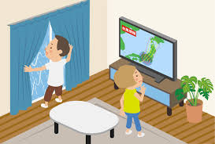
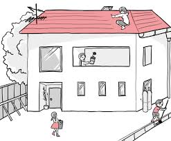
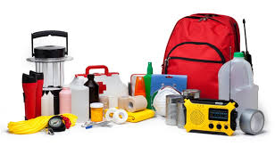
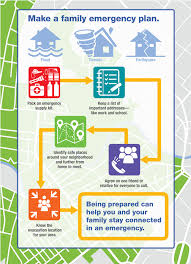
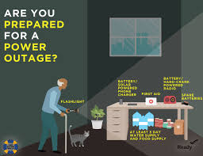
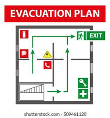

Emergency Preparedness
Being prepared can reduce fear, anxiety, and losses that accompany disasters. Communities, families, and individuals should know what to do in the event of a fire and where to seek shelter during a powerful storm.
The best way to protect workers is to expect the unexpected and to carefully develop an emergency action plan to guide everyone in the workplace when immediate action is necessary. Planning in advance helps ensure that everyone knows what to do when an emergency occurs.
Include Common Emergency Scenarios When You Plan
Plan for the emergencies that are most likely to happen where you live
- Be familiar with natural disaster risks in your community.
- Consider how you will respond to emergencies that can happen anywhere, such as home fires and floods.
- Consider how you will respond to emergencies that are unique to your region, such as volcanoes, tsunamis or tornadoes
- Think about emergencies that may require your family to shelter in place (such as a winter storm), vs. emergencies that may require evacuation (such as a hurricane).
- Consult our emergency resource library for tips on preparing for, responding to, and recovering from specific disasters.
Plan what to do in case you are separated during an emergency
Choose two places to meet up:
- Right outside your home in case of a sudden emergency, such as a fire
- Outside your neighborhood, in case you cannot return home or are asked to evacuate
- Choose an out-of-area emergency contact person. It may be easier to text or call long distance if local phone lines are overloaded or out of service. Everyone should carry emergency contact information in writing and saved on their cell phones. Make sure places where your children spend time also have these contact numbers, like at school or daycare.
- Your plan should account for family members who may live elsewhere during the year, such as members of the military on deployment or students away at college, or those who travel frequently.
Emergency Contact Card
- Make cards for the whole family in case you are separated during an emergency.
Plan what to do if you have to evacuate
- Decide where you would go and what route you would take to get there, such as hotel or motel.
- The home of friends or relatives a safe distance away.
- An evacuation shelter.
- Practice evacuating your home twice a year. Grab your emergency kit, just like you will in a real emergency, then drive your planned evacuation route. Plot alternate routes on your map in case roads are impassable. Make sure you have locations and maps saved on devices such as cell phones and GPS units and on paper.
- Plan ahead for your pets. Keep a phone list of pet-friendly hotels/motels and animal shelters that are along your evacuation routes. Remember, if it’s not safe for you to stay home, it’s not safe for your pets either.
Plan for everyone in your home
Older Adults
People with Disabilities
Children
Pets
The Philippines, according to Philippine Atmospheric, Geophysical and Astronomical Services Administration (PAGASA), is prone to tropical cyclones due to its geographical location which generally produce heavy rains and flooding of large areas and also strong winds which result in heavy casualties to human life and destructions to crops and properties. Thus, it is of utmost importance to have sufficient knowledge on such maritime phenomena for beneficial purposes.
Typhoon Preparedness Plan
Use this disaster preparedness checklist for typhoon to familiar with what to do when a typhoon, hurricane, or cyclone hits. Prepare for such an event by doing the following:
Before
Before a typhoon, it's crucial to be prepared to ensure the safety of you and your loved ones. Here are some steps you should take:
Stay Informed
Monitor the news and weather updates regularly. Listen to the advice of local authorities and evacuate if they advise you to do so.
Prepare Your Home
Secure your home by closing and boarding up windows. Remove outdoor items or tie them down securely. Clear your gutters and drains to prevent flooding.
Prepare An Emergency Kit
Your kit should include items such as food and water for at least three days, medications, a flashlight, batteries, cash, and first-aid supplies.
Create A Family Emergency Plan
Make sure every member of your family knows what to do and where to go in case of a typhoon. Identify a safe place in your home where you can take shelter.
Check On Neighbors
Check on your neighbors, especially those who may need assistance like the elderly or disabled.
Protect Important Documents
Place important documents in a waterproof container to prevent damage.
Prepare For Power Outage
Charge your devices, and have backup power options available if possible.
Evacuation Plan
If you live in a high-risk area, plan your evacuation route ahead of time and have a backup plan in case your initial route is blocked.
During
During a typhoon, it's important to stay safe and follow these guidelines:
Stay Inside
Stay indoors and away from windows, skylights, and glass doors to avoid injury from breaking glass.
Listen to the News
Keep updated with the latest weather reports and instructions from local officials. Use a battery-operated radio in case of power outages.
Avoid Flood Waters
Never attempt to walk or drive through flood waters. It can be difficult to gauge the depth, and just a few inches of water can sweep you off your feet or your vehicle away.
Stay in Your Safe Place
This should be an interior room, closet, or hallway on the lowest level of your home. Stay there until the storm has completely passed.
Don't Use Electrical Equipment
Avoid using telephones and electrical appliances during the storm to avoid electric shock.
Beware Of The Eye
If the eye of the typhoon passes over, there will be a short period of calm, but at the other side of the eye, the wind speed rapidly increases to hurricane force and will come from the opposite direction.
After
After a typhoon, it's important to remain cautious as there may still be hazards around. Here are some steps to follow:
Wait For The All Clear
Don't venture outside until local authorities have declared it safe to do so.
Check For Injuries
Check yourself and others for injuries. Provide first aid for anyone who needs it. Seek medical attention immediately for serious injuries.
Inspect Your Home
Carefully check your home for damage. If you believe your home is unsafe, do not enter. Report any suspected gas leaks to your utility company immediately.
Document Damage
Take photos or videos of any damage to your property for insurance purposes.
Listen To The News
Stay updated with the latest news and instructions from local officials.
Avoid Flood Waters
Flood waters may be contaminated or electrically charged. Avoid driving or walking through them.
Use Electricity With Caution
Don't touch electrical equipment if it's wet or if you're standing in water. Turn off the electricity at the main breaker if it's safe to do so.
Check On Neighbors
Once it's safe, check on your neighbors, particularly those who may need assistance.
Clean Up Safely
When cleaning up, wear protective clothing and be cautious of potential hazards.
Report Downed Power Lines
Report any downed power lines to the local authorities immediately. Stay away from them.
Remember
- The aftermath of a typhoon can be just as dangerous as the storm itself. Be cautious, stay informed, and prioritize safety.
- In short, being prepared for a disaster can save lives, protect property, and help communities recover more quickly when disaster strikes.
- Every area and home is unique so you may need to adjust this plan to fit your specific needs. It's always a good idea to consult with professionals or your local government for advice tailored to your situation.
- It's always better to be over-prepared than under-prepared when it comes to natural disasters like typhoons.
Heatwave Preparedness Plan
As global temperatures continue to rise, heatwaves are becoming increasingly frequent and severe. These extreme heat events can have serious health impacts, particularly for vulnerable populations such as the elderly, children, and those with chronic health conditions. Consequently, having a robust heatwave preparedness plan is crucial for ensuring individual and community safety.
Here are the things you should do when experiencing heatwaves:
Before Going Outside
Before going outside, make sure to stock up electrolyte-rich beverages and water to stay hydrated. Make sure to stay cool by staying in spaces with air conditioners or spaces with adequate ventilation, if you are indoors. Also make sure to stay hydrated, and plan outdoor activities for cooler times of the day, such as early in the morning or late evening.
While Outside
While outside, avoid direct sunlight. Bring umbrella, or stay in shaded areas such as trees, buildings, etc. Wearing lightweight, light-colored, and loose-fitting clothing will help you stay cool. Keep yourself hydrated all the times, and avoid caffinated and alcoholic drinks. It will only increase dehydration to your body. Don't forget to check other people who may be vulnerable to heat-related illnesses such as heatstroke, heat exhaustion, etc.
After Going Outside
Even if you're already inside your house, or any establishments, be sure to keep yourself hydrated. Be aware of the symptoms of heat-related illnesses from yourself and the people around you. Seek medical assistance if needed. Learn from your experience to make adjustments to your plan in the future. Keep yourself informed to weather patterns to be prepared to future heatwaves.